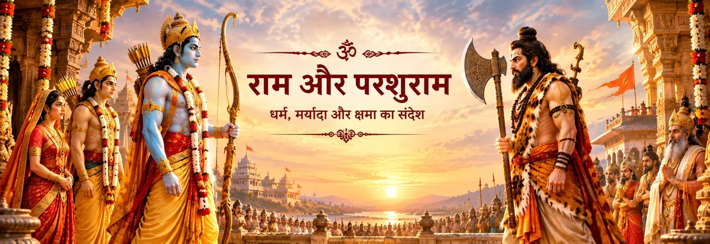

वापसी के मार्ग में परशुराम का आगमन
वाल्मीकि बताते हैं कि मिथिला से लौटती विवाह-यात्रा के समय परशुराम आते हैं। उनके आगमन से वातावरण गंभीर हो जाता है और ऋषि तथा राजपरिवार इस भेंट की महत्ता समझते हैं।

राम और परशुराम का मिलन
मिथिला में राम–सीता विवाह के बाद अयोध्या लौटती राजपरंपरा का सामना परशुराम से होता है। वाल्मीकि रामायण के बालकाण्ड में परशुराम सुन चुके हैं कि राम ने शिव का धनुष तोड़ा है। वे अपने साथ विष्णु से संबंधित एक दूसरे महान धनुष को लेकर आते हैं। यह भेंट राम की शक्ति, संयम और धर्मपूर्ण आचरण की परीक्षा बन जाती है।
राम–शिव की यात्रा में यह प्रसंग इसलिए विशेष है क्योंकि ग्रंथ दोनों दिव्य धनुषों को अलग-अलग रखता है: मिथिला में राम ने शिव का धनुष तोड़ा था; इसके बाद परशुराम विष्णु का धनुष प्रस्तुत करके राम से उसे चढ़ाने को कहते हैं। इन दोनों धनुषों को अलग समझना कथा की शास्त्रीय संरचना को स्पष्ट रखता है।
बालकाण्ड का प्रसंग
वाल्मीकि की कथा इस भेंट का एक स्पष्ट क्रम प्रस्तुत करती है।
वाल्मीकि बताते हैं कि मिथिला से लौटती विवाह-यात्रा के समय परशुराम आते हैं। उनके आगमन से वातावरण गंभीर हो जाता है और ऋषि तथा राजपरिवार इस भेंट की महत्ता समझते हैं।
परशुराम राम से कहते हैं कि उन्होंने शिव धनुष के टूटने की बात सुनी है। इसके बाद वे विष्णु से संबंधित एक प्रचंड धनुष प्रस्तुत करते हैं और राम से उसे चढ़ाकर अपनी शक्ति दिखाने को कहते हैं।
राम परशुराम की तपस्या और कर्मों का सम्मान करते हैं, लेकिन यह भी स्पष्ट करते हैं कि उनके क्षत्रिय धर्म को कमजोरी न समझा जाए। वे धनुष लेते हैं, उसे चढ़ाते हैं और उस पर बाण रखते हैं।
राम पूछते हैं कि बाण कहाँ छोड़ा जाए, क्योंकि इस धनुष का बाण व्यर्थ नहीं छोड़ा जा सकता। परशुराम अपनी तपस्या के फल और स्वर्गीय उपलब्धियों को लक्ष्य के रूप में चुनते हैं। बाण छोड़े जाने के बाद वे महेन्द्र की ओर प्रस्थान करते हैं।
दो धनुष, दो प्रसंग
वाल्मीकि के बालकाण्ड में शिव धनुष और विष्णु धनुष एक ही वस्तु नहीं हैं। परशुराम पहले राम द्वारा शिव धनुष तोड़े जाने का उल्लेख करते हैं और फिर दूसरा धनुष लाते हैं। ग्रंथ दूसरे धनुष को विष्णु का धनुष बताता है और उसकी अलग परंपरा तथा महत्ता प्रस्तुत करता है।
यह भेद राम–शिव संबंध को भी अधिक स्पष्ट बनाता है। शिव धनुष मिथिला के स्वयंवर और सीता के विवाह से जुड़ा है। बाद का सामना राम द्वारा शिव धनुष को दूसरी बार तोड़ना नहीं है; यह परशुराम की उपस्थिति में विष्णु धनुष पर राम की शक्ति के प्रकट होने का प्रसंग है।
भक्ति की दृष्टि
राम की शक्ति के साथ संयम और सम्मान भी उपस्थित हैं। यह प्रसंग शक्ति को धर्म द्वारा नियंत्रित साधन के रूप में देखने की प्रेरणा देता है।
तनावपूर्ण भेंट के बीच भी राम परशुराम की तपस्या और उपलब्धियों को स्वीकार करते हैं। भक्तिपरंपरा में यह सम्मानपूर्ण संवाद कथा का महत्वपूर्ण केंद्र बन जाता है।
भक्तिपरंपरा में इस मिलन को एक संक्रमण के रूप में भी पढ़ा जाता है—परशुराम की उग्र योद्धा-भूमिका पीछे हटती है और राम की लोकधर्म की भूमिका सामने आती है।
कथा का अंत सामान्य युद्ध में नहीं होता। धनुष के माध्यम से जो सत्य प्रकट होता है, उसे पहचानकर परशुराम पीछे हटते हैं और कथा राम की व्यापक यात्रा की ओर आगे बढ़ती है।
सावधान पाठ
यह भेंट वाल्मीकि रामायण के बालकाण्ड, विशेषकर सर्ग 74–76 में स्पष्ट रूप से आती है। रामचरितमानस भी इस प्रसंग को भक्तिपरक रूप में प्रमुखता देता है, जिसमें लक्ष्मण और परशुराम के बीच तीखा संवाद तथा राम का संतुलित हस्तक्षेप शामिल है।
बाद की भक्तिपरंपराएँ इस मिलन को राम की दिव्य पहचान के उद्घाटन या दैवी शक्ति के अलग-अलग रूपों के संक्रमण के रूप में प्रतीकात्मक ढंग से पढ़ सकती हैं। ये व्याख्याएँ अपनी परंपराओं में अर्थपूर्ण हैं, पर इन्हें संस्कृत ग्रंथ में सीधे कही गई कथा से अलग पहचानना चाहिए।
भक्तों के सामान्य प्रश्न
वाल्मीकि की कथा में यह सामना सामान्य शारीरिक युद्ध में नहीं बदलता। परशुराम दूसरे धनुष के माध्यम से राम को चुनौती देते हैं; राम उसे चढ़ाकर परिस्थिति पर नियंत्रण स्थापित करते हैं और उसके बाद परशुराम प्रस्थान करते हैं।
नहीं। वाल्मीकि के बालकाण्ड में दोनों को अलग बताया गया है। मिथिला में राम ने शिव का धनुष तोड़ा था; इसके बाद परशुराम विष्णु से संबंधित दूसरा धनुष लाते हैं।
क्योंकि यह भेंट राम द्वारा शिव धनुष तोड़े जाने के तुरंत बाद आती है, इसलिए यह उस व्यापक भक्तिपरंपरा का हिस्सा बनती है जिसमें राम की कथा और शिव-संबंधित परंपराएँ बार-बार मिलती हैं। फिर भी ग्रंथ को सावधानी से पढ़ना चाहिए और बाद की हर व्याख्या को वाल्मीकि का सीधा कथन नहीं मानना चाहिए।
वाल्मीकि के बालकाण्ड के अनुसार राम द्वारा बाण छोड़ने और प्रसंग समाप्त होने के बाद परशुराम महेन्द्र पर्वत की ओर चले जाते हैं।
राम और परशुराम का मिलन बालकाण्ड के एक महत्वपूर्ण मोड़ पर खड़ा है—बल और तपस्या की एक महान भूमिका पीछे हटती है और राम की व्यापक यात्रा सामने आती है। शिव धनुष और विष्णु धनुष के भेद के साथ इसे पढ़ने पर यह प्रसंग राम–शिव की पवित्र यात्रा का एक स्पष्ट और गहन अध्याय बन जाता है।